Componentes
Multímetro
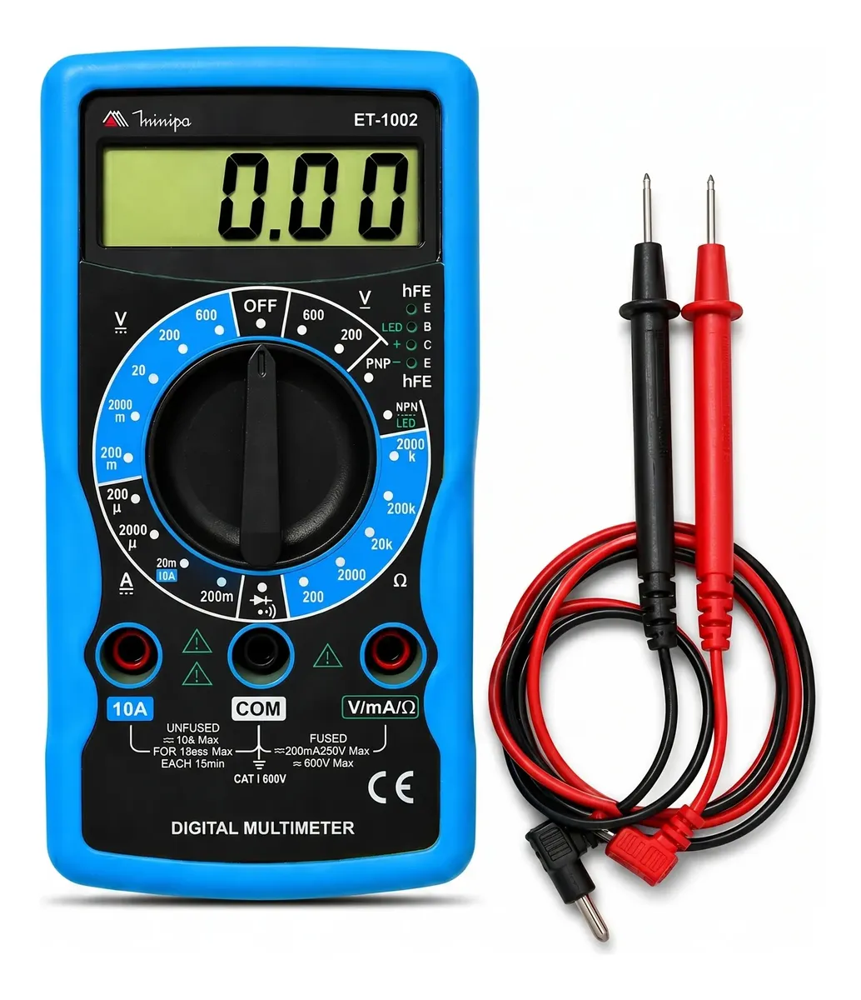
• Conceito:
É o instrumento de medição multiuso do eletricista. Ele condensa em um único aparelho a capacidade de avaliar diversas grandezas elétricas, como tensão (Volts), corrente (Amperes), resistência (Ohms), além de testar continuidade e diodos.
• Aplicações:
o Diagnóstico de falhas e testes em circuitos eletrônicos.
o Medição de tomadas, baterias e barramentos.
o Verificação de fios rompidos (teste de continuidade).
Disjuntor

• Conceito:
É um dispositivo de proteção termomagnético mecânico. Sua função é monitorar a corrente do circuito e desarmar automaticamente caso detecte uma sobrecarga (excesso de aparelhos ligados por muito tempo) ou um curto-circuito (um pico extremo e perigoso de corrente).
• Aplicações:
o Proteção de cabos e fiações contra superaquecimento e incêndios.
o Quadros de distribuição residenciais, comerciais e industriais.
Disjuntor Motor
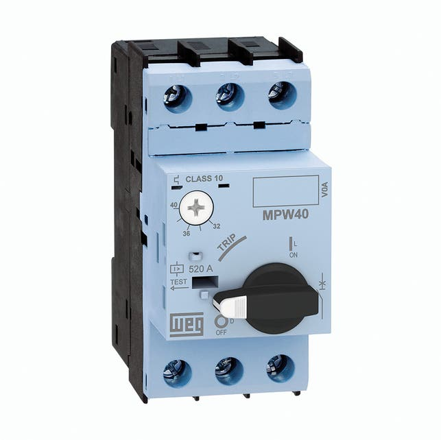
• Conceito:
Uma evolução do disjuntor comum, projetada especificamente para motores elétricos. Além de proteger contra curto-circuito e sobrecarga, ele possui uma sensibilidade extra para detectar a falta de fase (o que queimaria o motor rapidamente) e permite regular a corrente exata de trabalho do motor.
• Aplicações:
o Proteção e partida direta de motores elétricos industriais.
o Painéis onde se deseja economizar espaço, eliminando a necessidade de usar um disjuntor comum e um relé térmico separados.
Botoeira
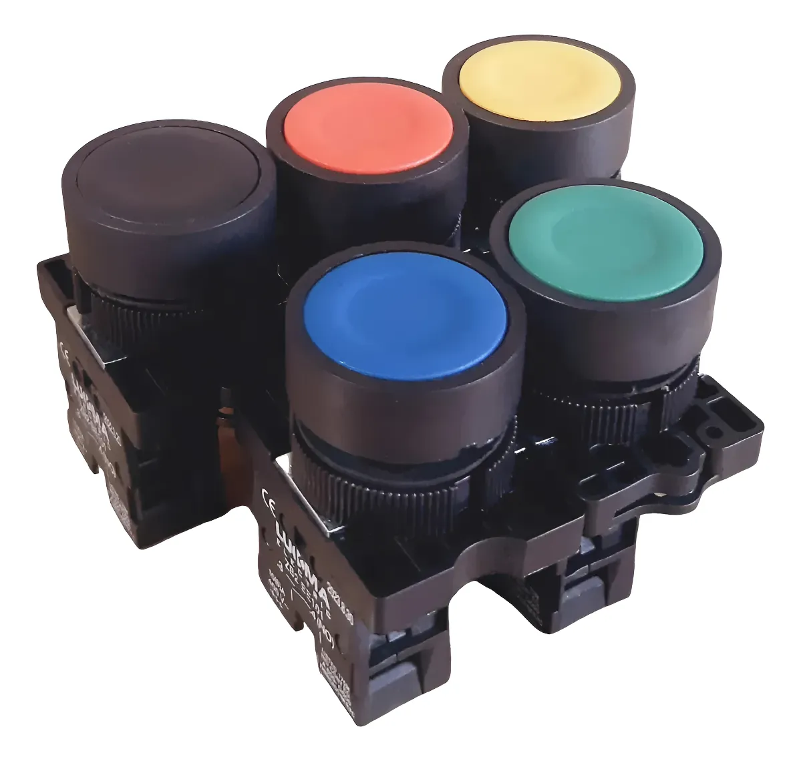
• Conceito:
É um botão de comando manual que serve para abrir ou fechar um circuito temporariamente. O tipo mais comum é o pulsador (com mola), que só altera seu estado enquanto estiver sendo pressionado.
• Aplicações:
o Verde:
Usada para ligar, dar partida ou arranque em máquinas e motores. Também indica que o sistema está em condições normais de operação.
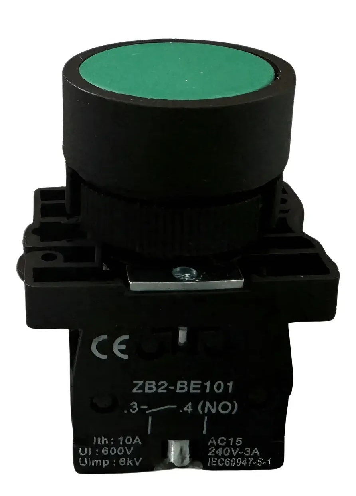
o Vermelha:
Utilizada para parar ou desligar o sistema em condições normais de operação.
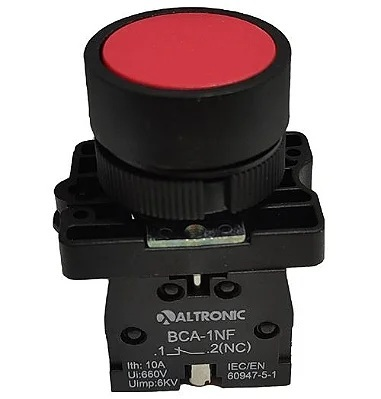
o Preta:
Possui a mesma função da verde, sendo utilizada para ligar, dar partida ou arranque.
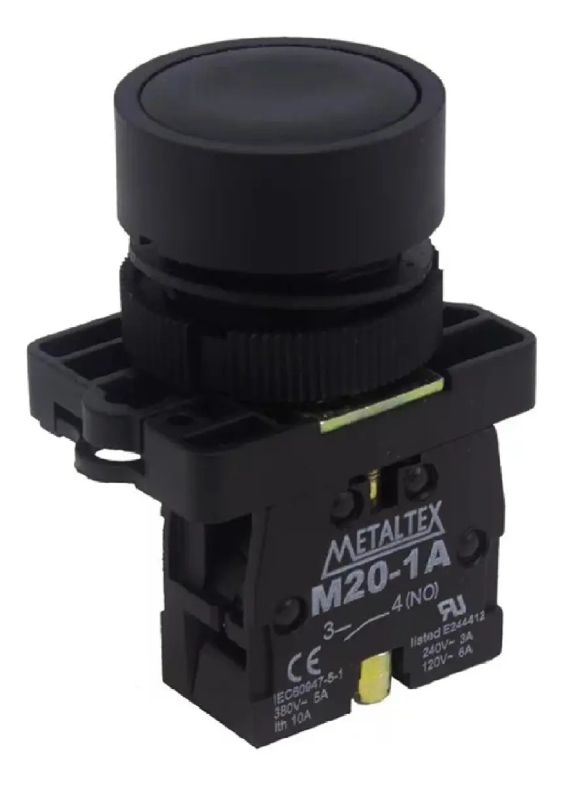
o Amarela:
Usada para cancelar uma operação, interromper um ciclo perigoso ou iniciar um retorno de segurança. Também pode servir para inverter o sentido de giro.
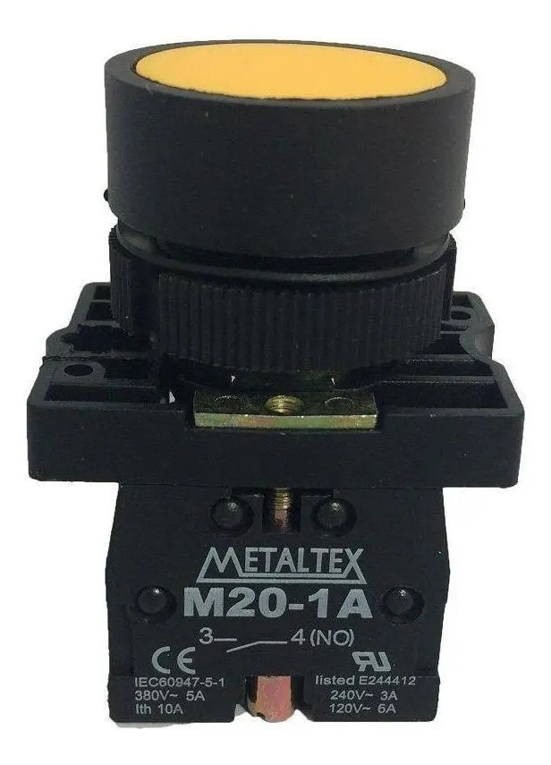
o Azul e Branca:
Destinada a qualquer outra função que não seja ligar, desligar, emergência ou cancelar. É aplicada quando nenhuma das outras cores se encaixa na necessidade do comando.
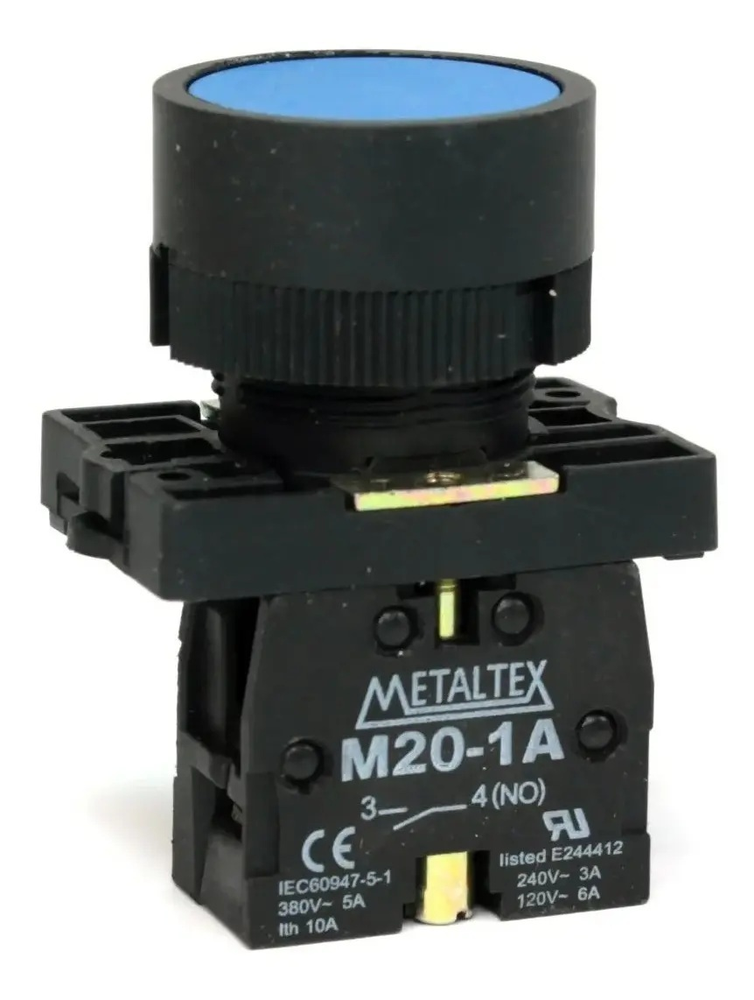
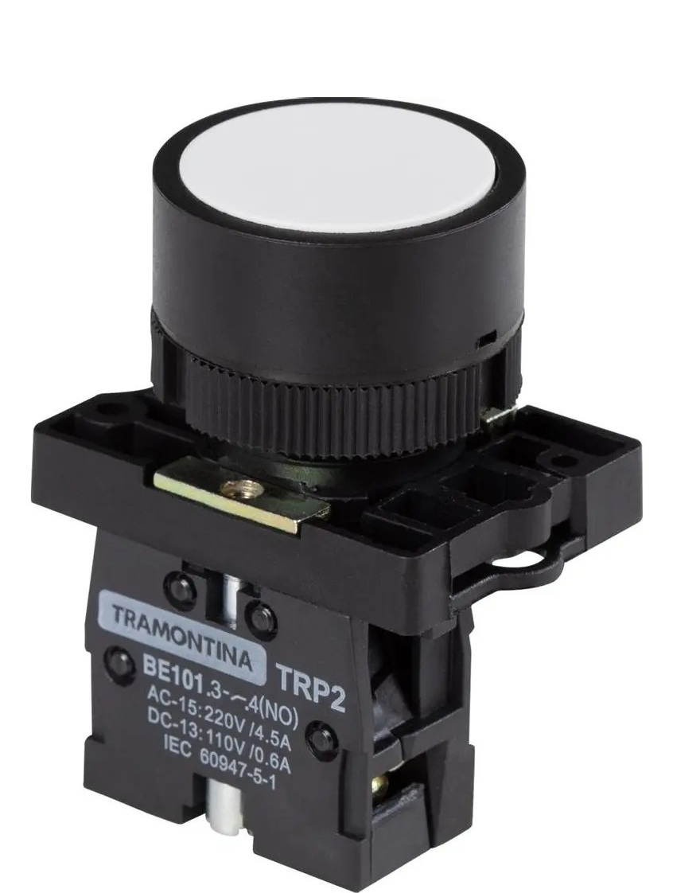
o Emergência:
Sempre vermelha (frequentemente com fundo amarelo) e do tipo "cogumelo". Possui trava mecânica para parada imediata do sistema e só permite o reinício após ser destravada manualmente.
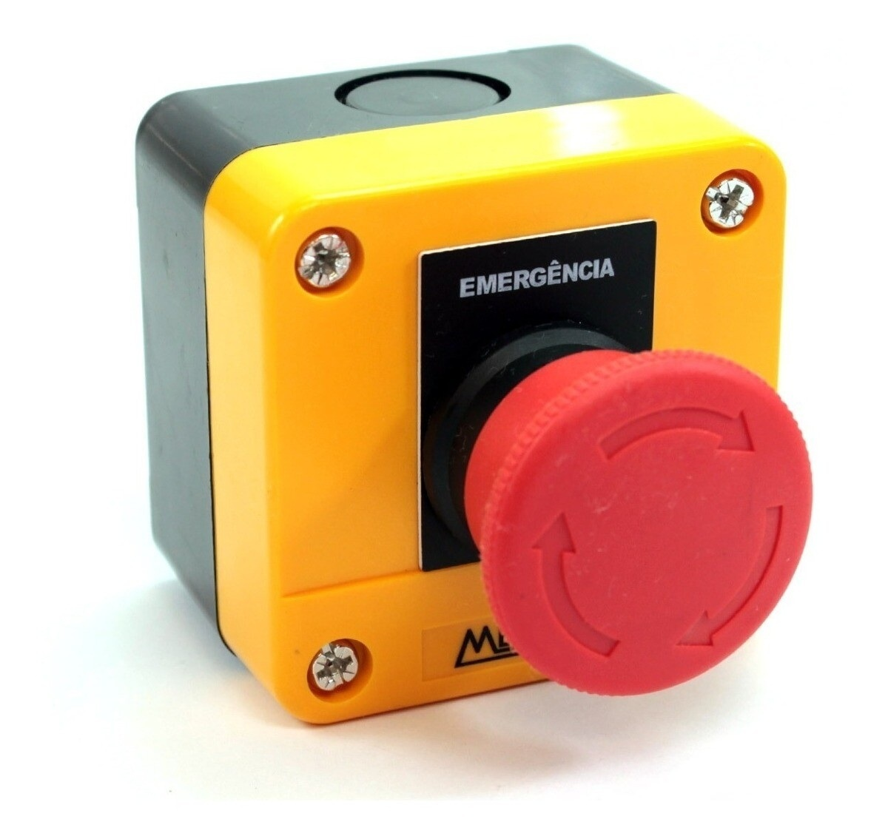
Chave de Retenção
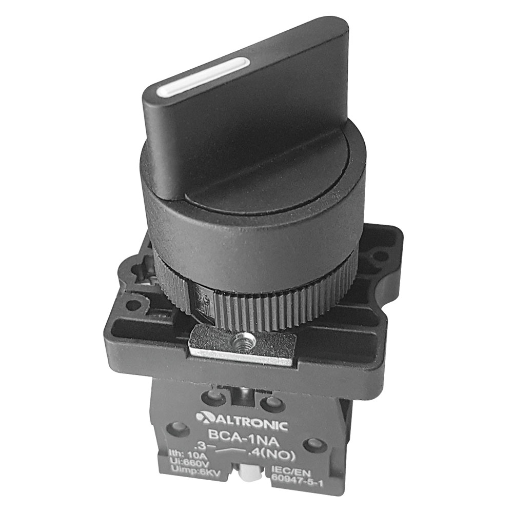
• Conceito:
Diferente da botoeira pulsadora, a chave de retenção mantém a posição após ser acionada. Ela possui uma trava mecânica interna e só muda de estado novamente se o operador for lá e girar ou pressionar o botão outra vez (como o interruptor de luz da sua casa).
• Aplicações:
o Chaves seletoras de modo (ex: alternar o painel entre "Manual" e "Automático").
o Chaves gerais de ligar/desligar equipamentos.
Sensor Fim de Curso (Limit Switch)
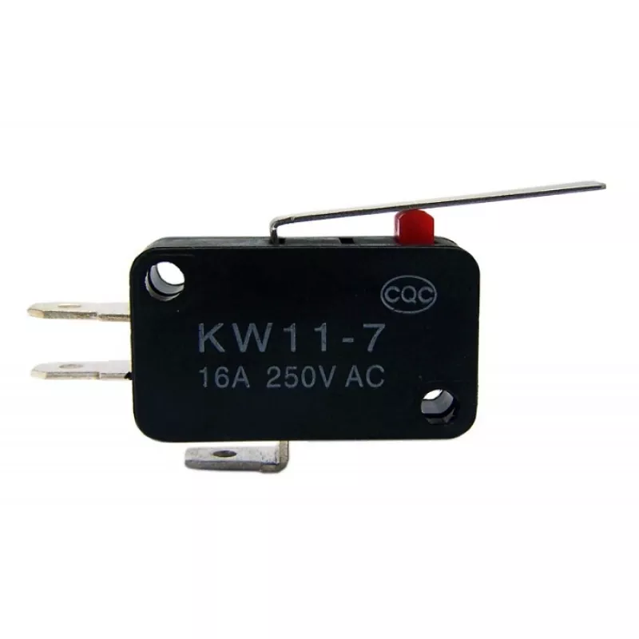
• Conceito:
É um interruptor eletromecânico acionado pelo impacto físico de um objeto móvel. Quando a estrutura da máquina encosta no rolete ou na haste do sensor, ele comuta seus contatos e envia um sinal elétrico para o sistema.
• Aplicações:
o Parar o motor de um portão eletrônico quando ele chega ao final do trilho.
o Identificar se a cabine de um elevador chegou ao andar correto.
o Garantir o limite de movimento seguro em braços mecânicos e pontes rolantes.
Motor Elétrico de Indução Trifásico (MIT)
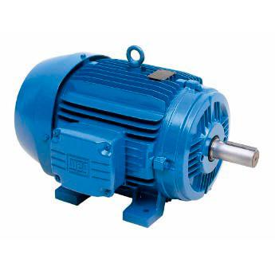
• Conceito:
É a força motriz da indústria. Uma máquina rotativa que converte energia elétrica trifásica em energia mecânica através do eletromagnetismo. É extremamente robusto, confiável e não utiliza escovas físicas para funcionar, o que reduz drasticamente a necessidade de manutenção.
• Aplicações:
o Acionamento de esteiras transportadoras, bombas d'água e compressores.
o Operação de exaustores, tornos, fresadoras e misturadores industriais.
Relé Temporizador
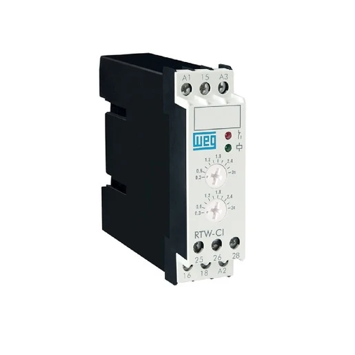
• Conceito:
É um dispositivo de controle que serve para abrir ou fechar contatos elétricos após o transcurso de um tempo pré-determinado. Ele pode funcionar com retardo na energização (espera um tempo para ligar) ou na desenergização (espera um tempo para desligar).
• Aplicações:
o Sistemas de partida de motores do tipo Estrela-Triângulo (controlando o tempo de transição).
o Sequenciamento de esteiras industriais (ligar a esteira B 10 segundos depois da esteira A).
o Sistemas de iluminação ou ventilação temporizada.
Relé Térmico (ou de Sobrecarga)
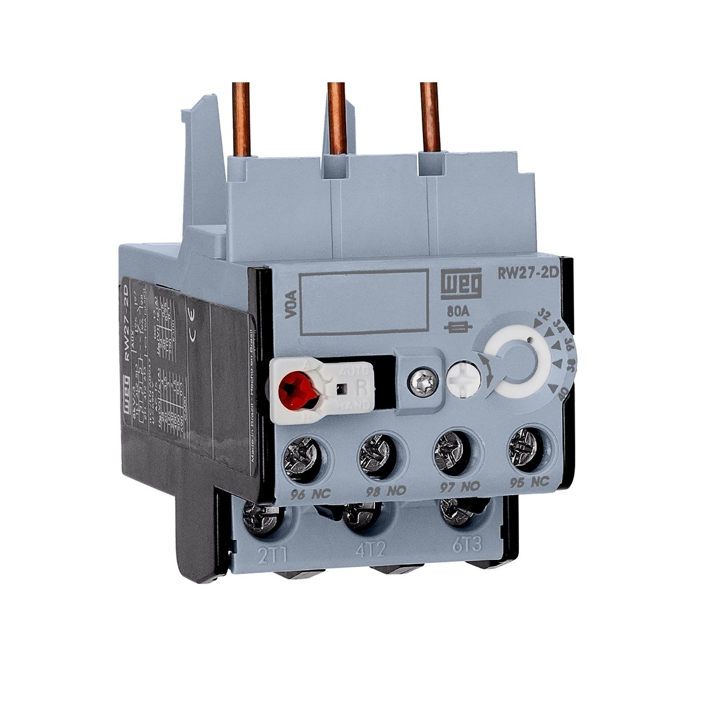
• Conceito:
É um dispositivo focado exclusivamente em salvar o motor de superaquecimentos causados por sobrecargas prolongadas. Ele possui lâminas bimetálicas internas que se dobram com o calor gerado pelo excesso de corrente; ao dobrarem, elas desarmam o circuito de comando do motor.
• Nota de segurança:
Ele não protege contra curto-circuito, precisando sempre trabalhar em conjunto com um disjuntor ou fusível.
• Aplicações:
o Proteção direta de motores elétricos, sendo montado logo abaixo do contator de potência no painel de comando.